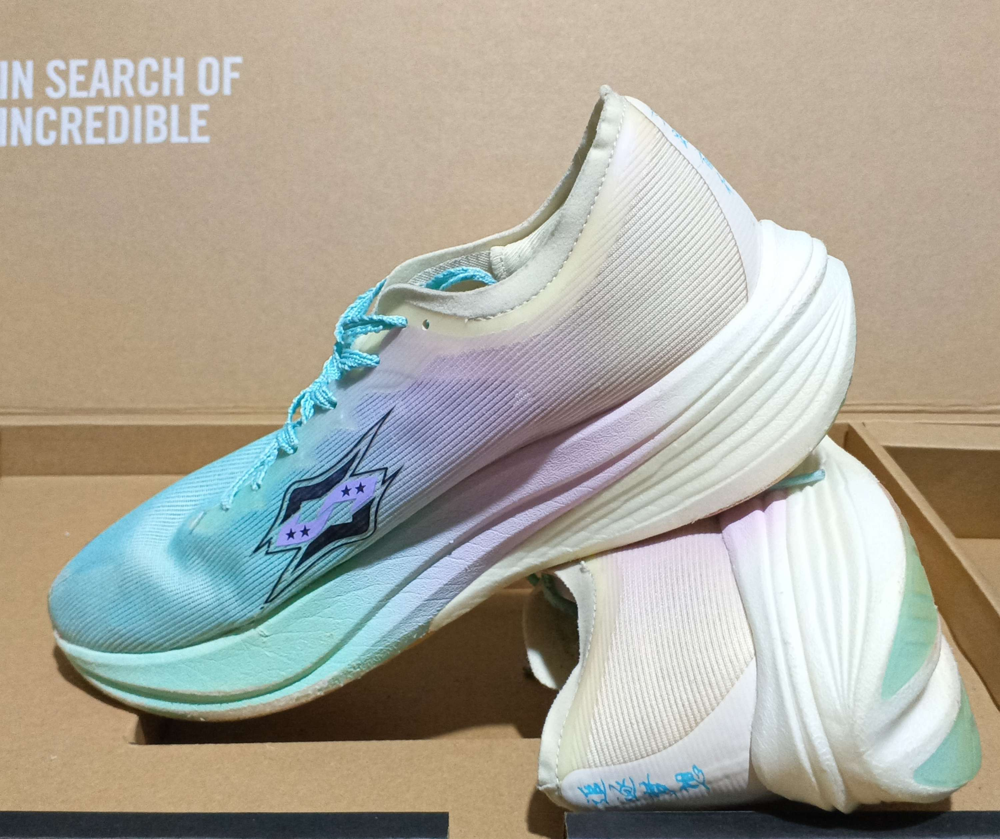
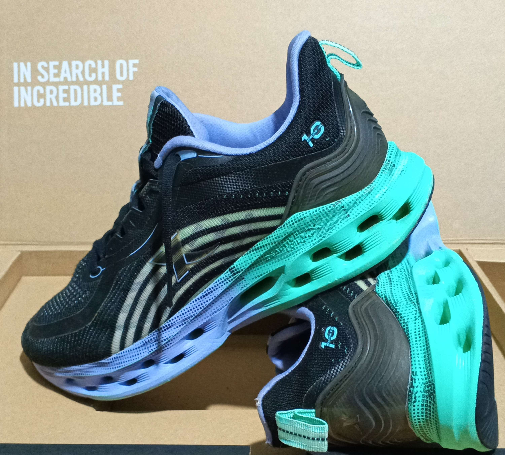

Tenis Coreanos
codigo: 001
Tenis Xtep
Talla: 41
Modelo: sneakers
Descripción: Su parte superior combina materiales sintéticos y malla para brindar durabilidad y transpirabilidad, mientras que los detalles en azul y negro aportan un toque dinámico y contemporáneo. La mediasuela gruesa y esculpida ofrece una excelente amortiguación y soporte, ideal para el uso diario.
Precio: Bs 150
codigo: 002
Tenis there nothing
Talla: 35
Modelo: sneakers
Descripción: Incorporan una puntera y ribetes amarillos, junto a una línea azul en la suela, lo que les da un toque fresco y original. Su silueta baja y sistema de cordones los hacen versátiles y cómodos para el uso diario.
Precio: Bs 100
codigo: 003
Tenis 361
Talla: 39
Modelo: Run Spark
Descripción: presentan un diseño contemporáneo y deportivo, con una combinación de materiales sintéticos y textiles. El color principal es beige, complementado con detalles en azul claro y blanco, y una suela gruesa con textura geométrica que sugiere buena amortiguación. El talón incluye una presilla en tono amarillo claro para facilitar el calzado.
Precio: Bs 160
codigo: 004
Tenis EKE
Talla: 37
Modelo: EKE
Descripción: Estos tenis presentan un diseño deportivo y moderno, con la parte superior en color negro y detalles en gris oscuro. La suela es gruesa, de color blanco, y presenta un patrón texturizado que sugiere buena amortiguación y tracción. El material parece ser una combinación de textil y sintético, proporcionando transpirabilidad y comodidad.
Precio: Bs 150
VENDIDO
codigo: 005
Tenis Xtep
Talla: 38
Modelo: KEER
Descripción: Estos tenis presentan un diseño moderno y deportivo, completamente en color blanco. Están confeccionados con materiales sintéticos y malla, lo que les proporciona transpirabilidad y ligereza. La suela es gruesa y robusta, ideal para ofrecer amortiguación y comodidad en cada paso.
Precio: Bs 160
codigo: 006
Tenis Nanjunxiang
Talla: 40
Modelo: Nanjunxiang
Descripción: El tenis llega hacer UNISEX, la parte superior está confeccionada con materiales sintéticos y malla, lo que aporta transpirabilidad y ligereza. La suela es gruesa y cuenta con una cámara de aire visible en la parte trasera, ideal para mejorar la amortiguación y la comodidad al caminar o correr. El diseño incluye detalles en blanco y negro, así como tiradores en la lengüeta y el talón para facilitar el calzado.
Precio: Bs 150
codigo: 007
Tenis Xtep
Talla: 40
Modelo: Xsoftpad COOL
Descripción: Estos tenis deportivos presentan un diseño moderno y aerodinámico, ideales para correr o actividades físicas. Están confeccionados en una malla de color negro con detalles en líneas grises y blancas en los laterales, lo que les da un aspecto dinámico y elegante. La suela es gruesa y blanca, con un diseño ondulado que proporciona buena amortiguación y soporte.
Precio: Bs 160
codigo: 008
Tenis 361
Talla: 40
Modelo: Running
Descripción: Estos tenis presentan un diseño deportivo y moderno, ideales para uso diario o actividades ligeras. Son de color negro en la parte superior, confeccionados con una combinación de malla y material sintético que proporciona transpirabilidad y comodidad. La suela es gruesa y blanca, lo que ofrece buena amortiguación y soporte al caminar.
Precio: Bs 160
VENDIDO
codigo: 009
Tenis 361
Talla: 40
Modelo: RUN SPARK
Descripción: Estos tenis deportivos presentan un diseño moderno y estilizado, con una combinación de tonos grises, negros y detalles en azul claro. La parte superior está confeccionada con materiales sintéticos y malla, lo que proporciona transpirabilidad y ligereza. La suela es gruesa y de color negro, diseñada para ofrecer buena amortiguación y soporte. El diseño incluye detalles en líneas curvas y patrones geométricos, dándole un aspecto dinámico y atractivo.
Precio: Bs 130
codigo: 010
Tenis 361
Talla: 42
Modelo: Running
Descripción: La suela es gruesa y cuenta con una cámara de aire visible en el talón, diseñada para ofrecer una excelente amortiguación y soporte durante el ejercicio. El diseño es moderno y aerodinámico, ideal tanto para correr como para uso casual diario.
Precio: Bs 160
codigo: 011
Tenis ERKE
Talla: 41
Modelo: BYE
Descripción: La suela es blanca, gruesa y con textura para ofrecer buen agarre y soporte al caminar. El interior es acolchonado, lo que aumenta la comodidad para uso prolongado. Son perfectos para quienes buscan un calzado versátil, fácil de combinar y con un estilo limpio y moderno.
Precio: Bs 115
codigo: 012
Tenis 361
Talla: 43
Modelo: Running
Descripción: Estos tenis deportivos presentan un diseño completamente negro, lo que los hace muy versátiles y fáciles de combinar con cualquier atuendo. Están confeccionados con una mezcla de materiales sintéticos y malla, lo que les proporciona transpirabilidad y comodidad. La suela es gruesa y también negra, diseñada para ofrecer buena amortiguación y soporte durante el uso diario o actividades físicas ligeras.
Precio: Bs 130
codigo: 013
Tenis Irunsvan
Talla: 40
Modelo: Irunsvan
Descripción: IRUNSVAN Journey Vision 1,0 zapatillas de tenis ultraligeras para hombre, zapatillas deportivas para hombre 2024, zapatillas deportivas para correr en gimnasio, zapatillas deportivas para hombre Unisex
Precio: Bs 160
codigo: 014
Tenis 361
Talla: 41
Modelo: Running
Descripción: Estos tenis deportivos presentan un diseño completamente negro, lo que los hace muy versátiles y fáciles de combinar con cualquier atuendo. Están confeccionados con una mezcla de materiales sintéticos y malla, lo que les proporciona transpirabilidad y comodidad. La suela es gruesa y también negra, diseñada para ofrecer buena amortiguación y soporte durante el uso diario o actividades físicas ligeras.
Precio: Bs 120
codigo: 015
Tenis Xtep
Talla: 43
Modelo: Air Comfort 2023
Descripción: Estos tenis presentan un diseño moderno y aerodinámico, ideales para correr o entrenar. La parte superior está confeccionada en malla transpirable de color gris claro con detalles en azul celeste y blanco, lo que proporciona frescura y comodidad. La suela es gruesa y robusta, con detalles en azul y verde translúcido, diseñada para ofrecer máxima amortiguación y soporte en cada paso.
Precio: Bs 140
codigo: 016
Tenis 361
Talla: 44
Modelo: QUIKCQTECH
Descripción: Zapatillas deportivas de carbono para hombre, zapatos deportivos originales de 361 grados para correr, con cojín profesional
Precio: Bs 140
codigo: 017
Tenis Xtep
Talla: 42
Modelo: Reactive cool 10
Descripción: Xtep-Zapatillas deportivas reactivas Coil 10,0 para hombre, deportivas antideslizantes con absorción de impacto, de malla transpirable
Precio: Bs 200
codigo: 018
Tenis Xtep
Talla: 41
Modelo: RUNNING
Descripción: Xtep-Zapatillas deportivas Wind Fire 26 Generation para hombre, calzado de deporte con amortiguación de rebote, invierno, 2022,
Precio: Bs 150
VENDIDO
codigo: 019
Zapatilla Semiformal 361
Talla: 43
Modelo: RUBEST TECH
Descripción: Estos tenis presentan un diseño robusto y deportivo, completamente en color negro. Están confeccionados con una combinación de materiales sintéticos y malla, lo que les proporciona resistencia, transpirabilidad y comodidad. La suela es gruesa y cuenta con un patrón de tacos, ideal para brindar buen agarre y tracción en diferentes superficies, lo que los hace adecuados para actividades al aire libre o terrenos irregulares.
Precio: Bs 140
codigo: 020
Tenis 361
Talla: 41
Modelo: SPIRE RUNNING
Descripción: 361 uruguay ¡No esperes más para experimentar el siguiente nivel! Los Spire CQT te ofrecen estabilidad, ajuste personalizado con Morphit, ligereza y ventilación con malla Jacquard, agarre superior con suela de triple capa y amortiguación reactiva con ETPU y CQT.
Precio: Bs 150
codigo: 021
Tenis GSD
Talla: 42
Modelo: Cachos
Descripción: Estos son unos zapatos de fútbol (tacos) de la marca GSD. Presentan un diseño clásico y funcional en color azul intenso, con detalles en blanco y negro. La parte superior está confeccionada en material sintético resistente, ideal para soportar el uso intenso en canchas de pasto natural o sintético.
Precio: Bs 200
codigo: 022
Tenis 361
Talla: 41
Modelo: Flying ET
Descripción: Zapatillas de running 361° Flying ET unisex de caña baja, color fluorescente blast pink/game blue
Precio: Bs 170
codigo: 023
Zapatilla casual
Talla: 40
Modelo: Women's Comfortable Flat Bottom Sneakers In College Style For Casual Sports
Descripción: Estos tenis presentan un diseño tipo slip-on (sin agujetas), lo que los hace muy prácticos para poner y quitar rápidamente. El exterior es de color blanco con un patrón acolchado en cuadros, dándoles un aspecto moderno y elegante. Los detalles en negro en la lengüeta, el borde y el tirador trasero contrastan y realzan el diseño. La suela es blanca, gruesa y ligera, ideal para brindar comodidad durante todo el día.
Precio: Bs 100
codigo: 024
Zapato
Talla: 41
Modelo: FANG6U
Descripción: Zapatos Bajos Para Hombres Con Estilo Y Versatilidad Para El Trabajo, Deportes, Ocio Y Actividades Al Aire Libre
Precio: Bs 110
codigo: 025
Tenis 361
Talla: 44
Modelo: ONE DEGREE BEYOND
Descripción: Zapatillas de running fabricadas en textil con zonas de mayor ventilación e inserciones de TPU. La entresuela QU!K CQ TECH proporciona una amortiguación eficaz y resistencia a la deformación. Detalles: suela flexible con ranuras especiales, suela con inserciones de goma, presilla en el talón para cambiar de calzado fácilmente, almohadillas suaves en la zona del talón.
Precio: Bs 100